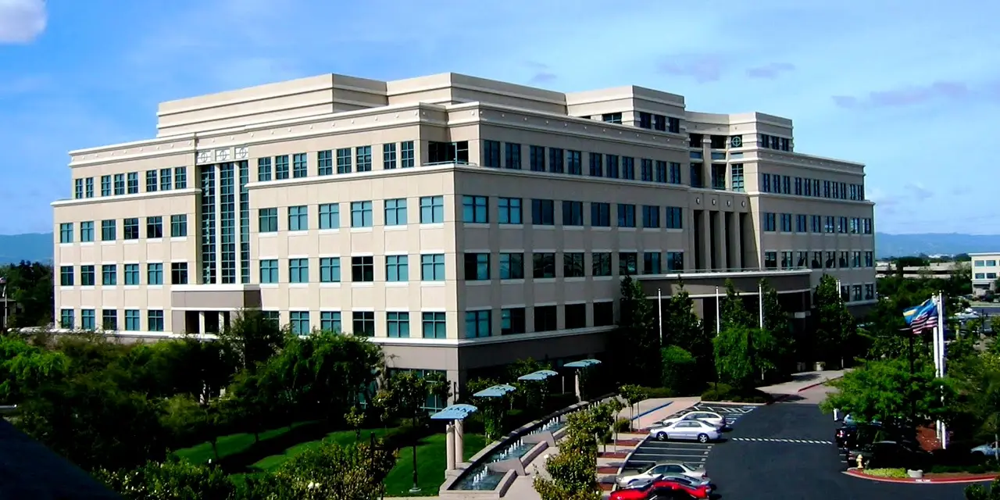

시스코 시스템즈를 볼 때 “AI 인프라 수혜”라는 말은 너무 넓습니다. 데이터센터 안에서 GPU가 많아질수록 네트워크도 복잡해지는 것은 맞지만, 주주에게 중요한 것은 발표 문구가 아니라 실제 포트 수, 스위치 단가, 납기, 유지보수 계약입니다. 네트워크 장비는 서버보다 눈에 덜 띄지만 병목이 생기면 전체 인프라가 멈춥니다.
시스코의 장점은 오래된 고객 기반입니다. 대기업, 통신사, 공공기관은 네트워크를 하루아침에 바꾸지 않습니다. 이 보수성이 성장률을 낮추는 것처럼 보이지만, 동시에 매출의 바닥을 만들어 줍니다. 문제는 AI 데이터센터 시장에서는 기존 강점만으로 충분하지 않다는 점입니다. 고객은 초고속 이더넷, 저지연 패브릭, 보안, 관측성을 한꺼번에 요구합니다.
시스코의 최근 실적 발표를 볼 때도 단순 매출보다 주문의 성격이 중요합니다. AI 관련 주문이 일회성 대형 계약인지, 반복되는 플랫폼 전환인지에 따라 밸류에이션이 달라집니다. 그래서 CSCO는 성장주처럼만 볼 수도 없고, 배당주처럼만 볼 수도 없습니다.
AI 네트워크는 멋진 말보다 포트 수가 중요합니다

AI 네트워크 수요는 GPU 수요와 비슷하게 보이지만 수익 구조는 다릅니다. GPU는 특정 세대 제품의 성능이 가격을 밀어 올리지만, 네트워크 장비는 안정성과 호환성이 가격 방어를 좌우합니다. 고객은 가장 빠른 제품만 사지 않습니다. 장애가 났을 때 누가 책임지고, 어떤 소프트웨어로 관측하며, 기존 시스템과 얼마나 잘 붙는지를 봅니다.
시스코가 이 시장에서 설득력을 가지려면 AI 패브릭 장비와 보안·관측성 소프트웨어가 함께 팔려야 합니다. 장비만 많이 팔리면 하드웨어 사이클에 머물 수 있습니다. 반대로 장비가 깔린 뒤 소프트웨어 구독과 서비스 계약이 따라오면 매출의 질은 달라집니다.
이 회사의 주주가 확인할 첫 질문은 “AI 주문이 얼마나 큽니까”가 아닙니다. “그 주문이 몇 년 동안 반복됩니까”입니다. 하이퍼스케일러 한두 곳의 주문이 급증하면 단기 실적은 좋아지지만, 다음 분기 비교 기준이 높아집니다. 여러 고객군에서 같은 패턴이 나오면 이야기는 달라집니다.
마진은 장비 가격보다 소프트웨어 묶음에서 나옵니다
관련 영상
Cisco Scaling AI – Deterministic Fabrics and High-Density Infrastructure with Richard Licon
시스코의 투자 매력은 과거부터 매출총이익률에 있었습니다. 네트워크 장비는 가격 경쟁이 심해 보이지만, 인증, 운영 경험, 유지보수 계약이 붙으면 방어력이 생깁니다. 다만 AI 데이터센터 장비는 경쟁 구도가 다릅니다. 고객이 대규모로 사기 때문에 가격 협상력이 강하고, 화이트박스와 맞춤형 네트워크 선택지도 늘어납니다.
브로드컴과 엔비디아는 이 점에서 중요한 비교 대상입니다. 브로드컴은 네트워크 칩과 맞춤형 반도체에서 데이터센터 예산을 봅니다. 엔비디아는 GPU와 네트워킹을 묶어 고객에게 제안합니다. 시스코는 이들과 정면으로 같은 제품을 파는 회사는 아니지만, 같은 AI 인프라 예산 안에서 선택받아야 합니다.
루멘텀 같은 광부품 기업도 함께 봐야 합니다. 데이터센터가 커질수록 스위치뿐 아니라 광모듈과 연결 부품이 병목이 됩니다. 시스코의 주문이 좋아도 광부품 공급이 막히면 납기는 흔들립니다. 그래서 AI 네트워크 투자는 스위치 회사 하나가 아니라 전체 연결 생태계의 문제입니다.
기업 네트워크 교체는 느리지만 오래갑니다
시스코의 안정성은 기업 네트워크 교체 주기에서 나옵니다. 기업은 보안, 무선, 스위칭, 원격 접속, 관측성을 한꺼번에 바꾸기 어렵습니다. 예산 승인과 보안 검토가 느리기 때문입니다. 이 느림은 단점이지만 한 번 표준으로 들어가면 교체도 느리다는 장점이 있습니다.
AI가 기업 내부로 들어가면 네트워크 요구사항도 바뀝니다. 사내 데이터가 더 많이 이동하고, 엣지 장비와 클라우드가 더 자주 연결되며, 보안 경계가 흐려집니다. 이때 시스코가 단순 장비 판매가 아니라 보안·관측성까지 묶어 제안할 수 있으면 기업 고객의 지갑에서 더 큰 몫을 가져갈 수 있습니다.
다만 기업 고객은 AI라는 이름만으로 네트워크를 바꾸지 않습니다. 실제 업무 속도, 장애 비용, 보안 감사, 원격 근무 환경 개선이 예산의 근거가 되어야 합니다. 시스코의 성장률이 갑자기 소프트웨어 기업처럼 바뀌기는 어렵습니다. 대신 느리지만 넓은 고객 기반에서 꾸준히 업그레이드가 일어나는지가 중요합니다.
주문·마진·구독을 같은 표에 놓아야 합니다
CSCO의 좋은 시나리오는 AI 데이터센터 주문과 기업 네트워크 교체가 동시에 살아나는 경우입니다. 여기에 보안과 관측성 구독이 붙으면 하드웨어 매출은 반복 수익의 입구가 됩니다. 이 경우 시스코는 저성장 장비주에서 안정적인 AI 인프라 플랫폼으로 다시 평가받을 수 있습니다.
나쁜 시나리오는 AI 주문이 대형 고객 몇 곳에 집중되고, 제품 마진이 낮아지고, 기업 교체 주기가 늦어지는 경우입니다. 그러면 매출은 커 보여도 이익의 질은 약해집니다. 네트워크는 AI의 필수 인프라이지만 필수 인프라라는 말이 항상 높은 마진을 뜻하지는 않습니다.
따라서 시스코를 볼 때는 제품 주문, 매출총이익률, 소프트웨어 ARR, 보안 부문 성장, 하이퍼스케일러 고객 집중도를 함께 봐야 합니다. 이 다섯 숫자가 같은 방향이면 AI 네트워크 스토리는 실적 언어가 됩니다. 하나라도 어긋나면 “AI 수혜”는 오래된 장비주에 붙은 좋은 수식어로 끝날 수 있습니다.
AI 인프라에서 시스코가 얻을 수 있는 몫은 데이터센터의 구조 변화에 달려 있습니다. GPU 클러스터가 커질수록 네트워크는 단순 연결 장치가 아니라 성능을 결정하는 계층이 됩니다. 패킷 손실, 지연 시간, 운영 자동화가 전체 학습 효율에 영향을 주기 때문에 고객은 네트워크를 더 전략적으로 봅니다.
그러나 이 시장은 가격과 표준의 전쟁이기도 합니다. 고객은 폐쇄적인 장비 묶음보다 개방형 표준과 여러 공급업체 조합을 원할 수 있습니다. 시스코가 높은 마진을 유지하려면 성능만이 아니라 운영 단순화, 장애 대응, 보안 통합에서 차이를 만들어야 합니다.
기업 네트워크 쪽에서는 Wi-Fi, 보안 접속, SD-WAN, 관측성이 함께 움직입니다. 사용자가 어디서 접속하든 같은 보안 정책을 적용해야 하기 때문입니다. 시스코가 기존 고객 기반을 활용해 보안과 관측성 구독을 늘리면 하드웨어 교체 주기의 약점을 보완할 수 있습니다.
또한 인수 통합도 확인해야 합니다. 시스코는 여러 소프트웨어와 보안 자산을 사들여 포트폴리오를 넓혔습니다. 인수가 매출에는 도움이 되어도 제품 경험이 복잡해지면 고객 만족도는 낮아질 수 있습니다. 통합 제품이 실제로 하나의 운영 화면처럼 작동하는지가 중요합니다.
결론적으로 CSCO는 고성장 AI 반도체주와 같은 방식으로 보면 안 됩니다. 더 느리고 더 넓은 기업 인프라의 언어로 봐야 합니다. 주문, 마진, 소프트웨어 비중, 갱신율이 함께 올라갈 때 시스코의 AI 이야기는 단순한 마케팅이 아니라 실적 구조가 됩니다.